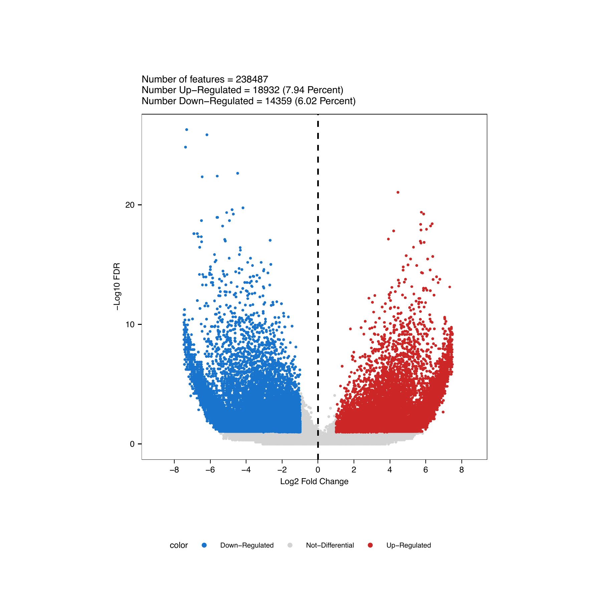
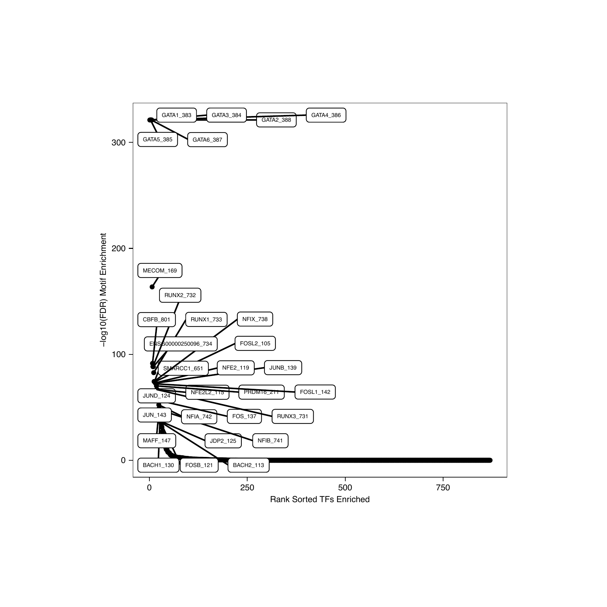
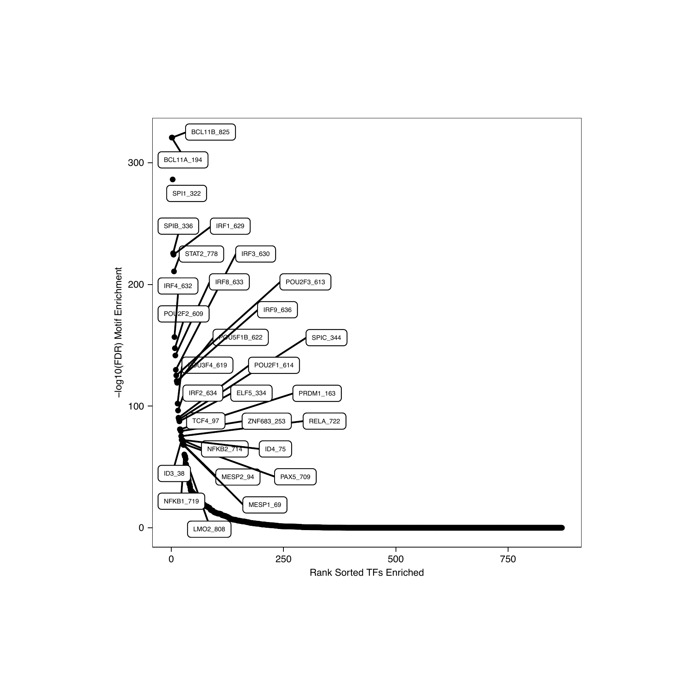
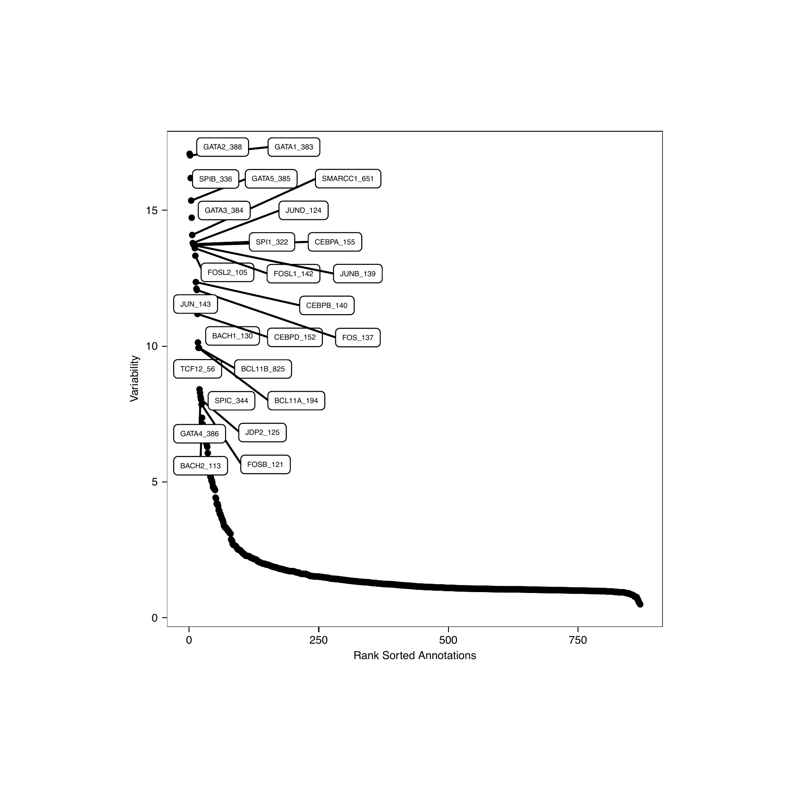
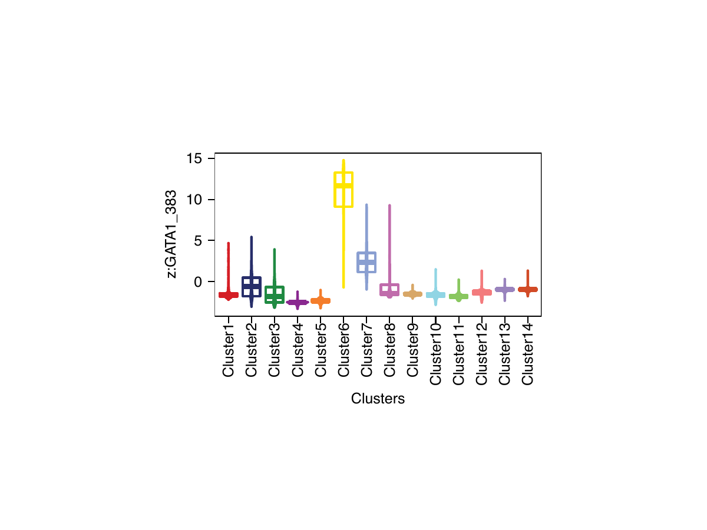
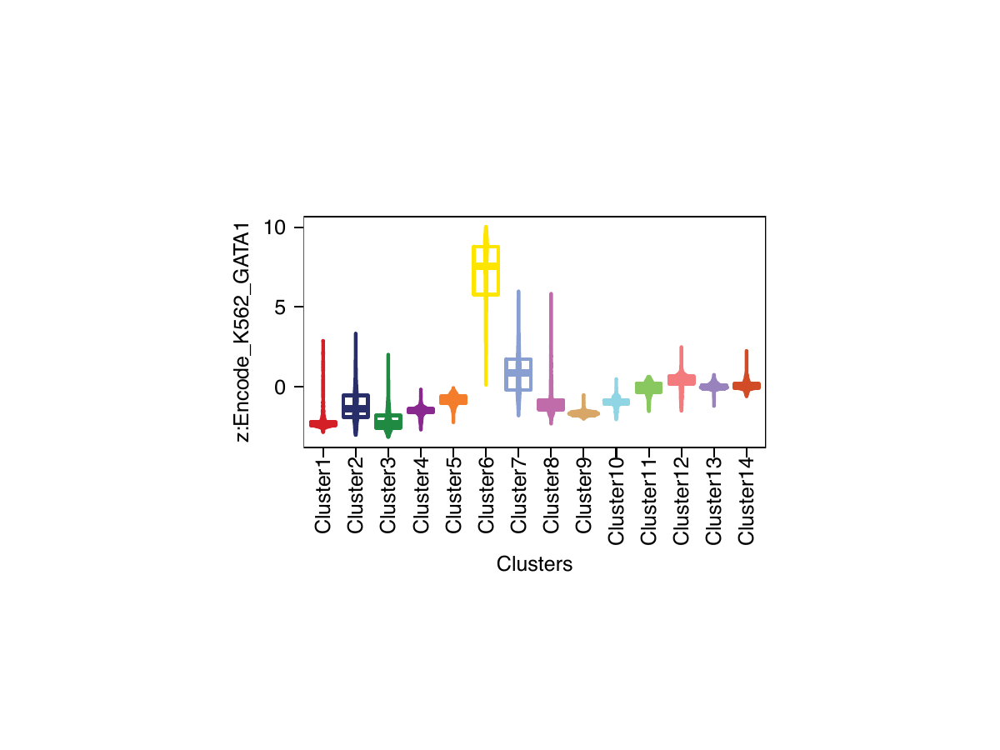

Getting Started With ArchR
tutorial.RmdThe following tutorial shows the basics of setting up and interacting with an ArchRProject using a gold-standard downsampled dataset of hematopoietic cells Granja* et al. Nature Biotechnology 2019. This tutorial and all of the accompanying vignettes assume that you are running ArchR locally. QQQ Once all of these steps work for you, feel free to set up ArchR to work in a cluster environment. This tutorial does not explain every detail of every step but rather shows you how to perform the most common analyses. Please see the Vignettes section for more details on each major analytical step and all of the major features of ArchR.
1. What is an ArrowFile / ArchRProject?
The base unit of an analytical project in ArchR is called an ArrowFile. Each ArrowFile stores all of the data associated with an individual sample (i.e. metadata, accessible fragments, and data matrices). Here, an “individual sample” would be the most detailed unit of analysis desired (for ex. a single replicate of a particular condition). During creation and as additional analyses are performed, ArchR updates and edits each ArrowFile to contain additional layers of information. It is worth noting that, to ArchR, an ArrowFile is actually just a path to an external file stored on disk. More explicitly, an ArrowFile is not an R-language object that is stored in memory. Because of this, we use an ArchRProject object to associate these ArrowFiles together into a single analytical framework that can be rapidly accessed in R. This ArchRProject object is small in size and is stored in memory.
Certain actions can be taken directly on ArrowFiles while other actions are taken on an ArchRProject which in turn updates each associated ArrowFile. Because ArrowFiles are stored as large HDF5-format files, “get-er” functions in ArchR retrieve data by interacting with the ArchRProject while “add-er” functions either (i) add data directly to ArrowFiles, (ii) add data directly to an ArchRProject, or (iii) add data to ArrowFiles by interacting with an ArchRProject.

2. Getting Set Up
The first thing we do is set up our working directory, load our gene and genome annotations, and set the number of threads we would like to use. Depending on the configuration of your local environment, you may need to modify the number of threads used below in addArchRThreads(). By default ArchR uses half of the total number of threads available but you can adjust this manually as you see fit. If you are using windows, the usable threads will automatically be set to 1 because the parallel processing in ArchR is build for Unix-based operating systems.
For the purposes of this tutorial, we provide the gene and genome annotations but you can create your own using the createGeneAnnotation() and createGenomeAnnotation() functions. See the Gene and Genome Annotations vignette for more information.
#Load R Libraries
library(ArchR)
#Create a new folder and set this as the working directory for tutorial analyses
wd <- "ArchR_tutorial"
dir.create(wd, showWarnings = FALSE, recursive = TRUE)
setwd(wd)
#Load genome annotations. Available annotations are for "Hg19", "Hg38", "Mm9", or "Mm10". QQQ THIS DOESNT MAKE SENSE. THE DATA IS HUMAN, NOT MOUSE, AND IS ONLY AVAILABLE FOR ONE GENOME FOR THE TUTORIAL? WOULD REMOVE.
data("geneAnnoHg19")
data("genomeAnnoHg19")
geneAnno <- geneAnnoHg19
genomeAnno <- genomeAnnoHg19
#Set Default Threads for ArchR Functions
addArchRThreads(threads = floor(parallel::detectCores()/2)) #QQQ I favor including default values to make it clear what happens. Open to suggestions though.3. Creating Arrow Files
For this tutorial, we will download a collection of fragment files. Fragment files are one of the base file types of the 10x Genomics analytical platform (and other platforms) and can be easily created from any BAM file. See the ArchR input file types vignette for information on making your own fragment files for input to ArchR. Once we have our fragment files, we provide their paths as a character vector to createArrowFiles(). During creation, some basic metadata and matrices are added to each ArrowFile including a “TileMatrix” containing insertion counts across genome-wide 500-bp bins (see addTileMatrix()) and a “GeneScoreMatrix” that is determined based on weighting insertion counts in tiles nearby a gene promoter (see addGeneScoreMatrix()). These gene activity scores are described in more depth in the Gene Activity Score vignette.
#Get Tutorial Data ~2.2GB To Download (if downloaded already ArchR will bypass downloading).
inputFiles <- getTutorialData("Hematopoiesis")
#Create Arrow Files (~10-15 minutes) w/ helpful messages displaying progress.
#For each sample, this step will:
# 1. Read accessible fragments.
# 2. Calculate QC Information for each cell (TSS Enrichment, Nucleosome info).
# 3. Filter cells based on QC parameters.
# 4. Create a genome-wide TileMatrix using 500-bp bins.
# 5. Create a GeneScoreMatrix using the provided geneAnnotation.
ArrowFiles <- createArrowFiles(
inputFiles = inputFiles,
sampleNames = names(inputFiles),
geneAnnotation = geneAnno,
genomeAnnotation = genomeAnno,
filterTSS = 4,
filterFrags = 1000,
addTileMat = TRUE,
addGeneScoreMat = TRUE
)

4. Tidying up our data and creating an ArchRProject
One major source of trouble in single-cell data is the contribution of “doublets” to the analysis. A doublet refers to a single droplet that received a single barcoded bead and more than one nucleus. This causes the reads from more than one cell to appear as a single cell. We remove these computationally and describe this doublet removal process in more depth in the doublet removal vignette.
#Add Infered Doublet Scores to each Arrow File (~2-5 min per sample)
doubScores <- addDoubletScores(ArrowFiles)
#Create ArchRProject
#The outputDirectory here describes where all downstream analyses and plots go.
proj <- ArchRProject(
ArrowFiles = ArrowFiles,
geneAnnotation = geneAnno,
genomeAnnotation = genomeAnno,
outputDirectory = "Heme_Tutorial2"
)
#To see information about ArchR Project created simply input
proj
#We can now visualize numeric metadata per grouping with a violin plot now that we have created an ArchR Project.
#For example we will plot TSS / Doublet Enrichment Scores per sample.
plotList <- list()
plotList[[1]] <- plotGroups(ArchRProj = proj,
groupBy = "Sample",
colorBy = "colData",
name = "TSSEnrichment",
)
plotList[[2]] <- plotGroups(ArchRProj = proj,
groupBy = "Sample",
colorBy = "colData",
name = "DoubletEnrichment",
)
plotPDF(plotList = plotList, name = "TSS-Doublet-Enrichment", width = 4, height = 4, ArchRProj = proj, addDOC = FALSE)
#Filter Doublets
#The automatic filtering rate will be based on how many cells are in the sample, if there
#are 5,000 cells ArchR will remove up to 250 (~5%) of the cells. If you believe more cells
#should be excluded change the filterRatio argument apropriately.
proj <- filterDoublets(proj)


5. Dimensionality Reduction
At this point, we have an ArchR project that is ready to be used in downstream visualizations and analyses. The first thing we will do is use an iterative latent semantic indexing (LSI) approach to define clusters in our data. Once we have identified clusters in our data, we can plot a UMAP embedding. For more details, see the dimensionality reduction vignette.
#Reduce Dimensions with Iterative LSI (~5-10 minutes)
proj <- addIterativeLSI(
ArchRProj = proj,
useMatrix = "TileMatrix",
reducedDimsOut = "IterativeLSI"
)
#Identify Clusters from Iterative LSI
#By default ArchR uses Seurat's FindClusters function because it is fast/robust producing reasonable clustering.
#The larger the resolution the more clusters will be called. The lower the resolution hte less clusters will be called.
#It is recommended to compare the results from your clusters and your embeddings and find params that best agree across
#both analyses for clarity.
proj <- addClusters(input = proj, reducedDims = "IterativeLSI", resolution = 0.6)
#Compute a UMAP embedding to visualize our tiled accessibility matrix in a 2-d setting.
proj <- addEmbedding(
ArchRProj = proj,
reducedDims = "IterativeLSI",
embedding = "UMAP",
embeddingParams = list(min_dist = 0.4) #see uwot::umap for alternative params
)
#Plot the UMAP Embedding with Metadata Overlayed such as Experimental Sample and Clusters.
#To change plotting aesthetics see ?plotEmbedding parameters.
plotList <- list()
plotList[[1]] <- plotEmbedding(ArchRProj = proj, colorBy = "colData", name = "Sample")
plotList[[2]] <- plotEmbedding(ArchRProj = proj, colorBy = "colData", name = "Clusters", plotParams = list(labelMeans=TRUE))
#Different ArchRPalette "circus"
plotList[[3]] <- plotEmbedding(ArchRProj = proj, colorBy = "colData", name = "Clusters", discreteSet = "circus", plotParams = list(labelMeans=TRUE))
plotPDF(plotList = plotList, name = "UMAP-Samples-Clusters", width = 6, height = 6, ArchRProj = proj, addDOC = FALSE)UMAP w/ Clusters
This plot shows gene experimental samples and clusters described above overlayed onto the UMAP embedding. (Note if you see a blank space below try firefox or safari)

TSNE w/ Clusters
#Compute a TSNE embedding to visualize our tiled accessibility matrix in a 2-d setting.
proj <- addEmbedding(
ArchRProj = proj,
reducedDims = "IterativeLSI",
embedding = "Rtsne",
embeddingParams = list(perplexity = 50)
)
#Plot the TSNE Embedding with Metadata Overlayed such as Experimental Sample and Clusters.
#To change plotting aesthetics see ?plotEmbedding parameters.
plotList <- list()
plotList[[1]] <- plotEmbedding(ArchRProj = proj, colorBy = "colData", embedding = "Rtsne", name = "Sample")
plotList[[2]] <- plotEmbedding(ArchRProj = proj, colorBy = "colData", embedding = "Rtsne", name = "Clusters", plotParams = list(labelMeans=TRUE))
#Different ArchRPalette "circus"
plotList[[3]] <- plotEmbedding(ArchRProj = proj, colorBy = "colData", embedding = "Rtsne", name = "Clusters", discreteSet = "circus", plotParams = list(labelMeans=TRUE))
plotPDF(plotList = plotList, name = "TSNE-Samples-Clusters", width = 6, height = 6, ArchRProj = proj, addDOC = FALSE)
UMAP w/ Custom ColData
To add your own information for plotting ontop of UMAP embedding we will show an example here.
#Get Cell Names
cellNames <- getCellNames(ArchRProj = proj)
#Get Sample names
sampleNames <- getCellColData(ArchRProj = proj, select = "Sample", drop = TRUE)
#Remove Replicate Name
sampleNames <- gsub("_R1", "", gsub("_R2", "", sampleNames))
#Add Info to cellColData
proj <- addCellColData(ArchRProj = proj, data = sampleNames, cells = cellNames, name = "Type")
#Plot the UMAP Embedding with Metadata Overlayed such as Experimental Sample and Clusters.
#To change plotting aesthetics see ?plotEmbedding parameters.
plotList <- list()
plotList[[1]] <- plotEmbedding(ArchRProj = proj, colorBy = "colData", name = "Type", plotParams = list(labelMeans=TRUE))
plotList[[2]] <- plotEmbedding(ArchRProj = proj, colorBy = "colData", name = "Type", discreteSet = "circus", plotParams = list(labelMeans=TRUE))
plotPDF(plotList = plotList, name = "UMAP-Samples-Type", width = 6, height = 6, ArchRProj = proj, addDOC = FALSE)

6. Identifying Cluster Cell Types Using Marker Genes
In order to understand which clusters correspond to which cell types, we use a supervised approach based on prior knowledge of the genes that are active in specific cell types. We determine gene activity scores for each putative marker gene based on chromatin accessibility signal in the region surrounding the gene’s promoter. We can then overlay these gene activity scores on our UMAP embedding to visualize the relationship between gene activity and cluster. For more details, see the marker genes vignette.
#Add Imputation Weights for imputing numerical values based on Magic (see van Dijk et. al. 2018).
proj <- addImputeWeights(ArchRProj = proj)
markerGenes <- c(
"CD34", #Early Progenitor
"GATA1", #Erythroid
"PAX5", "MS4A1", #B-Cell Trajectory
"CD14", #Monocytes
"CD3D", "CD8A", "TBX21", "IL7R" #TCells
)
#Plot the UMAP Embedding with Marker Genes Overlayed w/ Imputation
plotList <- list()
plotList[[1]] <- plotEmbedding(ArchRProj = proj, colorBy = "GeneScoreMatrix", name = markerGenes, imputeWeights = getImputeWeights(proj))
plotPDF(plotList = plotList, name = "UMAP-Marker-Gene-Scores-w-Imputation", width = 6, height = 6, ArchRProj = proj, addDOC = FALSE)
#Plot the UMAP Embedding with Marker Genes Overlayed w/o Imputation
plotList <- list()
plotList[[1]] <- plotEmbedding(ArchRProj = proj, colorBy = "GeneScoreMatrix", name = markerGenes)
plotPDF(plotList = plotList, name = "UMAP-Marker-Gene-Scores-wo-Imputation", width = 6, height = 6, ArchRProj = proj, addDOC = FALSE)
#Plot Tracks at Marker Genes
plotTracks <- ArchRRegionTrack(ArchRProj = proj, geneSymbol = markerGenes)
plotPDF(plotList = plotTracks, name = "Plot-Tracks-Marker-Genes", width = 6, height = 8, ArchRProj = proj, addDOC = FALSE)
#Identify Marker Gene through Pairwise Test vs Bias-Matched Background
markersGS <- markerFeatures(ArchRProj = proj, useMatrix = "GeneScoreMatrix", groupBy = "Clusters")
heatmapGS <- markerHeatmap(
seMarker = markersGS,
cutOff = "FDR <= 0.01 & Log2FC >= 1",
labelMarkers = markerGenes
)
plotPDF(heatmapGS, name = "GeneScores-Marker-Heatmap", width = 8, height = 12, ArchRProj = proj, addDOC = FALSE)UMAP GeneScores w/ Imputation
This plot shows gene activity scores of the marker genes described above overlayed onto the UMAP embedding. The gene scores are imputed using Magic when running addImupteWeights. (Note if you see a blank space below try firefox or safari)


UMAP GeneScores w/o Imputation
This plot shows gene activity scores of the marker genes described above overlayed onto the UMAP embedding. (Note if you see a blank space below try firefox or safari)


7. Creating a Reproducible Peak Set
One of the most complicated aspects about ATAC-seq and scATAC-seq analysis is the generation of a reproducible and robust peak set. In ArchR, we use an iterative overlap removal process that we first described in Corces* & Granja* et al. Science 2018. This process is described in detail in the peak calling vignette.
To robustly call peaks, we first merge the sparse single-cell data into pseudo-bulk replicates by aggregating the insertions from many individual cells into a single group. We make multiple pseudo-bulk replicates for each cluster to enable an assessment of peak reproducibility. This process of pseudo-bulk generation is described in detail in the pseudo-bulk generation vignette. We than call peaks using MACS2 and perform our iterative overlap removal. Once we obtain a finalized non-overlapping peak set, we can then collect insertion counts in each peak for each single cell and associate this with the corresponding ArrowFile via the ArchRProject.
#Create Group Coverage Files that can be used for downstream analysis (~5-10 minutes)
proj <- addGroupCoverages(ArchRProj = proj, groupBy = "Clusters")
#Call Reproducible Peaks w/ Macs2 (~5-10 minutes)
proj <- addReproduciblePeakSet(ArchRProj = proj, groupBy = "Clusters")
#Add Peak Matrix
proj <- addPeakMatrix(ArchRProj = proj)
#We can now plot the fraction of reads/insertions for each cell per sample and see how that compares to TSS Enrichment scores.
plotList <- list()
plotList[[1]] <- plotGroups(ArchRProj = proj,
groupBy = "Sample",
colorBy = "colData",
name = "FRIP",
)
plotList[[2]] <- plotGroups(ArchRProj = proj,
groupBy = "Sample",
colorBy = "colData",
name = "TSSEnrichment",
)
plotPDF(plotList = plotList, name = "FRIP-TSS-Enrichment", width = 4, height = 4, ArchRProj = proj, addDOC = FALSE)8. Identifying Marker Peaks
Often times, we are interested to know which peaks are unique to an individual cluster or a small group of clusters. We can do this in an unsupervised fashion in ArchR:
#Identify Marker Peaks
markersPeaks <- markerFeatures(ArchRProj = proj, useMatrix = "PeakMatrix", groupBy = "Clusters")
#Visualize Markers as a heatmap
heatmapPeaks <- markerHeatmap(
seMarker = markersPeaks,
cutOff = "FDR <= 0.1 & Log2FC >= 1"
)
plotPDF(heatmapPeaks, name = "Peak-Marker-Heatmap", width = 8, height = 12, ArchRProj = proj, addDOC = FALSE)Markers MA/Volcano-Plot
#Marker Peaks for Cluster 6 (Erythroid)
plotList <- list()
plotList[[1]] <- markerPlot(seMarker = markersPeaks, name = "Cluster6", cutOff = "FDR <= 0.1 & abs(Log2FC) >= 1", plotAs = "MA")
plotList[[2]] <- markerPlot(seMarker = markersPeaks, name = "Cluster6", cutOff = "FDR <= 0.1 & abs(Log2FC) >= 1", plotAs = "Volcano")
plotPDF(plotList = plotList, name = "Cluster6-Marker-Peaks", width = 6, height = 6, ArchRProj = proj, addDOC = FALSE)Track of Peak Markers
#Get Marker Regions
markerRegions <- markerGR(seMarker = markersPeaks, cutOff = "FDR <= 0.1 & Log2FC > 1")
#Plot Tracks at Marker Genes
plotTracks <- ArchRRegionTrack(
ArchRProj = proj,
geneSymbol = c("GATA1", "PAX5", "CD8A"),
features = markerRegions,
plotSummary = c("bulkTrack", "featureTrack", "geneTrack"),
sizes = c(10, 4, 4)
)
plotPDF(plotList = plotTracks, name = "Plot-Tracks-w-Marker-Peaks-Genes", width = 6, height = 8, ArchRProj = proj, addDOC = FALSE)Pairwise-Test Between Groups
#Pairwise Test between Cluster 6 (Erythroid) and Cluster 10 (B-Cells)
testClust6_10 <- markerFeatures(
ArchRProj = proj,
useMatrix = "PeakMatrix",
groupBy = "Clusters",
testMethod = "wilcoxon",
bias = c("TSSEnrichment", "log10(nFrags)"),
useGroups = "Cluster6",
bgdGroups = "Cluster10"
)
#Plot Differential Plot
plotList <- list()
plotList[[1]] <- markerPlot(seMarker = testClust6_10, name = "Cluster6", cutOff = "FDR <= 0.1 & abs(Log2FC) >= 1", plotAs = "MA")
plotList[[2]] <- markerPlot(seMarker = testClust6_10, name = "Cluster6", cutOff = "FDR <= 0.1 & abs(Log2FC) >= 1", plotAs = "Volcano")
plotPDF(plotList = plotList, name = "Cluster6-Cluster10-Marker-Peaks", width = 6, height = 6, ArchRProj = proj, addDOC = FALSE)2

#Add Motif Peak Annotations if not already added!
proj <- addMotifAnnotations(ArchRProj = proj, motifSet = "cisbp", name = "Motif")
#Identify Motif Enrichments
motifsUp <- peakAnnoEnrichment(
seMarker = testClust6_10,
ArchRProj = proj,
peakAnnotation = "Motif",
cutOff = "FDR <= 0.1 & Log2FC >= 0.5"
)
#Create data.frame
df <- data.frame(TF = rownames(motifsUp), mlog10FDR = assay(motifsUp)[,1])
df <- df[order(df$mlog10FDR, decreasing = TRUE),]
df$rank <- seq_len(nrow(df))
#Ggplot
ggUp <- ggplot(df, aes(rank, mlog10FDR)) +
geom_point(size = 1) +
ggrepel::geom_label_repel(
data = df[rev(seq_len(30)), ], aes(x = rank, y = mlog10FDR, label = TF),
size = 1.5,
nudge_x = 2
) + theme_ArchR() + ylab("-log10(FDR) Motif Enrichment") + xlab("Rank Sorted TFs Enriched")
plotPDF(ggUp, name = "Cluster6-Cluster10-Motifs-Up", width = 6, height = 6, ArchRProj = proj, addDOC = FALSE)
motifsDo <- peakAnnoEnrichment(
seMarker = testClust6_10,
ArchRProj = proj,
peakAnnotation = "Motif",
cutOff = "FDR <= 0.1 & Log2FC <= -0.5"
)
#Create data.frame
df <- data.frame(TF = rownames(motifsDo), mlog10FDR = assay(motifsDo)[,1])
df <- df[order(df$mlog10FDR, decreasing = TRUE),]
df$rank <- seq_len(nrow(df))
#Ggplot
ggDo <- ggplot(df, aes(rank, mlog10FDR)) +
geom_point(size = 1) +
ggrepel::geom_label_repel(
data = df[rev(seq_len(30)), ], aes(x = rank, y = mlog10FDR, label = TF),
size = 1.5,
nudge_x = 2
) + theme_ArchR() + ylab("-log10(FDR) Motif Enrichment") + xlab("Rank Sorted TFs Enriched")
plotPDF(ggDo, name = "Cluster6-Cluster10-Motifs-Down", width = 6, height = 6, ArchRProj = proj, addDOC = FALSE)
9. Performing Peak Annotation Enrichments
#Motif Search in Peak Set and add to Peak Annotations
proj <- addMotifAnnotations(ArchRProj = proj, motifSet = "cisbp", name = "Motif")
#Identify Motif Enrichments
enrichMotifs <- peakAnnoEnrichment(
seMarker = markersPeaks,
ArchRProj = proj,
peakAnnotation = "Motif",
cutOff = "FDR <= 0.1 & Log2FC >= 0.5"
)
heatmapEM <- enrichHeatmap(enrichMotifs, n = 10)
plotPDF(heatmapEM, name = "Motifs-Enrich-Heatmap", width = 8, height = 12, ArchRProj = proj, addDOC = FALSE)
#Custom Peak Annotations
EncodePeaks <- c(
Encode_K562_GATA1 = "https://www.encodeproject.org/files/ENCFF632NQI/@@download/ENCFF632NQI.bed.gz",
Encode_GM12878_CEBPB = "https://www.encodeproject.org/files/ENCFF761MGJ/@@download/ENCFF761MGJ.bed.gz",
Encode_K562_Ebf1 = "https://www.encodeproject.org/files/ENCFF868VSY/@@download/ENCFF868VSY.bed.gz",
Encode_K562_Pax5 = "https://www.encodeproject.org/files/ENCFF339KUO/@@download/ENCFF339KUO.bed.gz"
)
proj <- addPeakAnnotations(ArchRProj = proj, regions = EncodePeaks, name = "ChIP")
#Identify ChIP Enrichments
enrichRegions <- peakAnnoEnrichment(
seMarker = markersPeaks,
ArchRProj = proj,
peakAnnotation = "ChIP",
cutOff = "FDR <= 0.1 & Log2FC >= 0.5"
)
heatmapER <- enrichHeatmap(enrichRegions, n = 10)
plotPDF(heatmapER, name = "Regions-Enrich-Heatmap", width = 8, height = 12, ArchRProj = proj, addDOC = FALSE)10. Computing chromVAR Deviations
Using the reproducible peak set that we defined above, we can use ArchR to calculate TF/Annotation deviations on a single-cell basis for transcription factors/annotations in the peaks identified in each cluster. We can then overlay these deviations on on UMAP embedding. This effectively infers differences in TF activity across all single cells and is very useful in identifying regulatory factors governing cell fate.
Motif Deviations
#Add Background Peaks to ArchR Project
proj <- addBgdPeaks(proj)
#Add chromVAR Deviations (~20-25 min if using CisBP Motif Set)
proj <- addDeviationsMatrix(ArchRProj = proj, peakAnnotation = "Motif")
#Plot Variable TFs
plotVarDev <- getVarDeviations(proj, plot = TRUE)
plotPDF(plotVarDev, name = "Plot-Var-Deviations", width = 6, height = 6, ArchRProj = proj, addDOC = FALSE)
#To access motif need to specify deviations,z : motif_name
#Try getFeatures with MotifMatrix to see available names
getFeatures(proj, select = "PAX5", useMatrix = "MotifMatrix")
#Define the list of motifs to plot
markerMotifs <- c("GATA1_383", "CEBPA_155", "EBF1_67", "IRF4_632", "TBX21_780", "PAX5_709")
#Plot Violins of motif deviations
plotList <- list()
plotList[[1]] <- plotGroups(ArchRProj = proj,
groupBy = "Clusters",
colorBy = "MotifMatrix",
name = paste0("z:",markerMotifs[1]),
imputeWeights = getImputeWeights(proj)
)
plotPDF(plotList = plotList, name = "Groups-Marker-MotifDeviations-w-Imputation", width = 4, height = 3, ArchRProj = proj, addDOC = FALSE)
#Plot the UMAP Embedding with chromVAR Deviations Overlayed
plotList <- list()
plotList[[1]] <- plotEmbedding(ArchRProj = proj, colorBy = "colData", name = "Clusters")
plotList[[2]] <- plotEmbedding(ArchRProj = proj, colorBy = "MotifMatrix", name = paste0("z:",markerMotifs), imputeWeights = getImputeWeights(proj))
plotPDF(plotList = plotList, name = "UMAP-Marker-MotifDeviations-w-Imputation", width = 6, height = 6, ArchRProj = proj, addDOC = FALSE)Region Deviations
#Add Background Peaks to ArchR Project
proj <- addBgdPeaks(proj)
#Add chromVAR Deviations
proj <- addDeviationsMatrix(ArchRProj = proj, peakAnnotation = "ChIP")
#To access motif need to specify deviations,z : motif_name
#Try getFeatures with MotifMatrix to see available names
getFeatures(proj, select = "PAX5", useMatrix = "ChIPMatrix")
#Define the list of regions to plot
markerRegions <- c("Encode_K562_GATA1", "Encode_GM12878_CEBPB", "Encode_K562_Ebf1", "Encode_K562_Pax5")
#Plot Violins of ChIP-seq deviations
plotList <- list()
plotList[[1]] <- plotGroups(ArchRProj = proj,
groupBy = "Clusters",
colorBy = "ChIPMatrix",
name = paste0("z:",markerRegions[1]),
imputeWeights = getImputeWeights(proj)
)
plotPDF(plotList = plotList, name = "Groups-Marker-ChIPDeviations-w-Imputation", width = 4, height = 3, ArchRProj = proj, addDOC = FALSE)
#Plot the UMAP Embedding with chromVAR Deviations Overlayed
plotList <- list()
plotList[[1]] <- plotEmbedding(ArchRProj = proj, colorBy = "colData", name = "Clusters")
plotList[[2]] <- plotEmbedding(ArchRProj = proj, colorBy = "ChIPMatrix", name = paste0("z:",markerRegions), imputeWeights = getImputeWeights(proj))
plotPDF(plotList = plotList, name = "UMAP-Marker-ChIPDeviations-w-Imputation", width = 6, height = 6, ArchRProj = proj, addDOC = FALSE)
11. Performing TF Footprinting
Transcription factor footprinting can also be done in ArchR with a single command. We note that the footprints generated by the tutorial data are not as clean as would be desired but this is because of the small size of the tutorial dataset.
#Plot Motif Footprints from positions list
#Recommend doing a few motifs not entire motif set
seFoot_None <- plotFootprints(
ArchRProj = proj,
positions = getPositions(proj)[markerMotifs],
groupBy = "Clusters",
normMethod = "none",
plotName = "Footprints-No-Normalization"
)Divide Bias
#Re-Plot with different normalization method
seFoot_Divide <- plotFootprints(
ArchRProj = proj,
inputSE = seFoot_None,
positions = getPositions(proj)[markerMotifs],
groupBy = "Clusters",
normMethod = "divide",
plotName = "Footprints-Divide-Bias"
)TSS Enrichment
#Add Coverages for Samples prior to footprint
proj <- addGroupCoverages(ArchRProj = proj, groupBy = "Sample")
#TSS by sample
TSS_Samples <- plotFootprints(
ArchRProj = proj,
positions = GRangesList(TSS = getTSS(proj)),
groupBy = "Sample",
normMethod = "none",
plotName = "TSS_Samples",
flank = 2000,
flankNorm = 100
)#TSS by clusters
TSS_Clusters <- plotFootprints(
ArchRProj = proj,
positions = GRangesList(TSS = getTSS(proj)),
groupBy = "Clusters",
normMethod = "none",
plotName = "TSS_Clusters",
flank = 2000,
flankNorm = 100
)12. Analyze Trajectories
#Myeloid Trajectory
#First we need to create a Trajectory and add it to ArchRProj cellColData
proj <- addTrajectory(ArchRProj = proj, name = "Myeloid", trajectory = c(paste0("Cluster", c(7,2,3,4,5))))
#Additionally we can plot these features on top of the UMAP embedding
plotList <- list()
plotList[[1]] <- plotEmbedding(ArchRProj = proj, colorBy = "colData", name = "Clusters", plotParams = list(labelMeans=TRUE))
plotList[[2]] <- plotTrajectory(proj, trajectory = "Myeloid", colorBy = "colData", name = "Myeloid")
plotList[[3]] <- plotTrajectory(proj, trajectory = "Myeloid", colorBy = "GeneScoreMatrix", name = "CEBPB")
plotList[[4]] <- plotTrajectory(proj, trajectory = "Myeloid", colorBy = "MotifMatrix", name = "z:CEBPB_140")
plotPDF(plotList = plotList, name = "Plot-UMAP-Myeloid-Trajectory", width = 6, height = 6, ArchRProj = proj, addDOC = FALSE)
#Next we can access variable features across the trajectory and summarize
TrajMyeloidMM <- getTrajectory(ArchRProj = proj, name = "Myeloid", useMatrix = "MotifMatrix", log2Norm = FALSE)
TrajMyeloidGS <- getTrajectory(ArchRProj = proj, name = "Myeloid", useMatrix = "GeneScoreMatrix")
#We can then plot a heatmap for this trajectory to see variable features
plotList <- list()
plotList[[1]] <- trajectoryHeatmap(TrajMyeloidMM)
plotList[[2]] <- trajectoryHeatmap(TrajMyeloidGS)
plotPDF(plotList = plotList, name = "Myeloid-Trajectory-Heatmap", width = 8, height = 12, ArchRProj = proj, addDOC = FALSE)